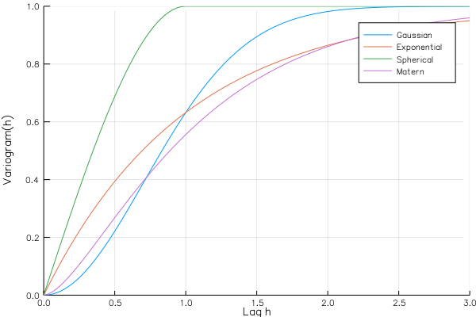

Plotting
GeoStats.jl is integrated with the Julia Plots.jl API. This means that many objects defined in the package can be plotted directly without data format conversions.
For example, below we plot various theoretical variograms with the plot command from Plots.jl:
using GeoStats
using Plots
gr(size=(600,400)) # hide
plot(GaussianVariogram(), maxlag=3., label="Gaussian")
plot!(ExponentialVariogram(), maxlag=3., label="Exponential")
plot!(SphericalVariogram(), maxlag=3., label="Spherical")
plot!(MaternVariogram(), maxlag=3., label="Matern")
png("images/variograms.png") # hide
Besides plotting GeoStats.jl objects directly, a few other plots are provided for exploring spatial data.
h-scatter
A h-scatter plot between two variables var1 and var2 (possibly with var2 = var1) is a simple scatter plot in which the dots represent all ordered pairs of values of var1 and var2 at a given lag h.
using GeoStats
using Plots
hscatter(geodata, :value, lags=[0.,1.,2.,3.])